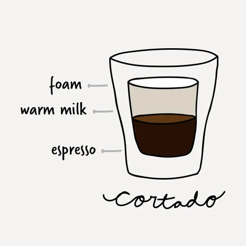

Black eye, Red eye'ın double versiyonudur, aşırı derecede caffeine
içerir.
Oran: 2 shot espresso + 6 oz. süzme kahve
Bardak: 8-10 oz. Kahve Kupası
Americano
Americano, popüler kahvaltı içeceğidir ve II. Dünya Savaşı sırasında
ortaya çıktığı düşünülmektedir. Askerler, erzaklarını daha da
genişletmek için kahvelerine su eklerdi. Su, espressoyu seyreltirken
kafeini yüksek seviyede tutar.
Oran: 1 shot espresso + 3 oz. sıcak su
Bardak: 5-6 oz. Cam Kahve Kupası
Long Black
Long black, americano'ya benzer bir kahve içeceğidir, ancak Yeni
Zelanda ve Avustralya'da ortaya çıkmıştır. Genellikle bir americanodan
daha fazla kremaya sahiptir..
Oran: 2 shot espresso + 3 oz. sıcak su
Bardak: 6-8 oz. Cam Kahve Kupası
Macchiato
Macchiato kelimesi işaret veya leke anlamına gelir. Bu, buharda
pişirilmiş sütün içeceğe püskürtüldüğünde espressonun yüzeyinde
bıraktığı iz ile ilgilidir. Tatlandırıcı şuruplar genellikle müşteri
tercihine göre içeceğe eklenir.
Oran: 1 shot espresso + 1 ya da 2 tatlı kaşığı
buharla ısıtılmış süt
Bardak: 3 oz. Cam Espresso Kupası
Long Macchiato
Genellikle standart bir macchiato ile karıştırılan long macchiato,
daha uzun bir versiyondur ve genellikle farklı kahve ve buharda
ısıtılmış süt katmanları ile tanımlanabilir.
Oran: 2 shot espresso + 2 ya da 4 tatlı kaşığı
buharda ısıtılmış süt
Bardak: 5 oz. Viski Bardağı

Cortado
Cortado, asitliği azaltmak için espressoyu ılık sütle eşit olarak
dengeleyerek macchiato'yu bir adım daha ileri götürür.
Oran: 1 shot espresso + 1 oz. sıcak süt + 1 cm
köpük
Bardak: 5 oz. Viski Bardağı
Cappuccino
Bu kremalı kahve İtalya'da genellikle kahvaltıda tüketilir ve
Amerika'da da sevilir. Kalın köpük tabakası ve buna eklenebilen ilave
aromalar nedeniyle genellikle hoşgörü ve rahatlık ile
ilişkilendirilir.
Oran: 1 ya da 2 shot espresso + 2 oz. buharda
ısıtılmış süt + 2 oz. köpürtülmüş süt + çikolata tozu (opsiyonel)